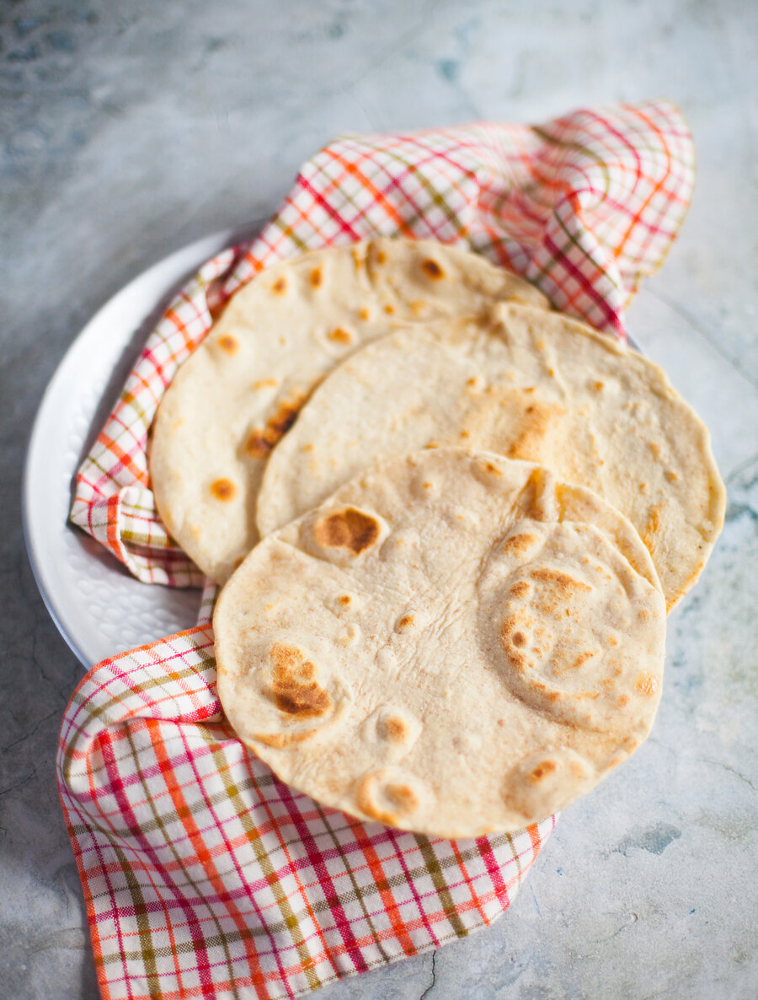

Плоские лепешки тортильи — самый простой и быстрый хлеб на свете! В них нет дрожжей, тесто не нужно долго и тщательно вымешивать, достаточно лишь вымесить до гладкости и однородности, ему не нужна длительная расстойка. Есть, конечно, и другие подобные лепешки — итальянская пьядина и индийская чапати. Но тортильи мне кажутся наиболее универсальными: их можно подавать и к карри, и к чили кон карне, к любым блюдам, где есть густой соус, в который их можно макать, в них можно заворачивать разнообразные начинки, делать роллы, рулеты и многое другое.
По этому рецепту тортильи и на следующий день остаются мягкими при правильном хранении, а если все же подсохнут, легко приводятся «в чувство» с помощью гриля или той же сковородки. Хранить лепешки следует в полиэтиленовом пакете или завернуть в плотную ткань, положить в кастрюлю и накрыть крышкой. Если все же они немного подсохли, можно нагреть сковородку, положить лепешку, сбрызнуть крышку с внутренней стороны водой из пульверизатора и накрыть сковородку с лепешками на 1–2 минуты. Либо разогреть на гриле в течение нескольких секунд.
Тортильи можно делать только из простой хлебопекарной пшеничной муки, а можно добавить немного цельнозерновой пшеничной или кукурузной для аромата и хруста. Правда, учтите, что с кукурузной мукой они становятся суше и долго не хранятся, зато отлично подойдут для начос. В этом случае их лучше раскатать в более тонкий пласт, нарезать треугольниками и обжарить в масле до хруста. Этот же рецепт используется и для приготовления мексиканских такос — только нужно раскатать лепешки меньшего размера.
Удобнее всего выпекать тортильи на блинной или чугунной сковородке диаметром 22–24 см либо любой другой с невысокими бортиками. Лучше раскатывать тесто рядом с плитой, поскольку оно очень тонкое, чтобы сразу перенести заготовку на горячую сковородку. Чтобы перенести тесто, нужно приподнять скребком край теста, подложить под него одну руку и подхватить другой рукой второй край.